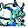

#226
Golisopod
BugWater
It batters foes with huge claws from all sides It sharpens them against hard rocks
Base stats Total 475
HP85
Attack125
Defense130
Speed50
Special85
Details
- Species
- Heavy
- Height
- 6'07"
- Weight
- 661.0 lb
- Catch rate
- 45
- Base exp
- 225
- Growth
- Medium Fast
Level-up moves
LevelMoveType
StartSand-AttackNormal
StartBug BiteBug
StartGrowlNormal
Lv 17Bug BiteBug
Lv 21Pin MissileBug
Lv 28Sucker PunchDark
Lv 30WaterfallWater
Lv 32LungeBug
Lv 34SlashNormal
Lv 36CrunchDark
Lv 38X ScissorBug
Lv 44Swords DanceNormal
Evolution
Evolves from Wimpod
Where to find
Not found in the wild — evolve, trade or catch it elsewhere.
TM / HM
TM03 Swords DanceTM06 ToxicTM08 Body SlamTM09 Take DownTM10 Double-EdgeTM11 BubblebeamTM12 Water GunTM13 Ice BeamTM14 BlizzardTM15 Hyper BeamTM17 SubmissionTM19 Seismic TossTM21 Mega DrainTM28 DigTM31 MimicTM32 Double TeamTM34 BideTM39 SwiftTM40 Sludge BombTM44 RestTM48 Rock SlideTM50 SubstituteHM01 CutHM03 SurfHM04 Strength